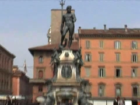
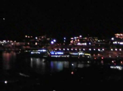

Italia 2002
Imágenes de la Villa Pallavecini [0:52]
Paseo por Ferrara [4:31]
Subida a la Chiesa San Luca [3:22]- 
Piazza Maggiore [3:57] 
Sala Borsa [1:09]
Centro - Dos torres [1:09]
Paseo por Maranello [2:21]
Paseo por los Muros [4:28]
Vida maestrandos - Cena casera [1:47]
Paseo por Verona, Ravenna y Padova - día 1 [8:10]
Paseo por Verona, Ravenna y Padova - día 2 [5:58]
Vida maestrandos - Truco [1:26]- 
Paseo por Genova, Pisa y Siena - día 1 [3:08]
Paseo por Genova, Pisa y Siena - día 2 [4:49]
Paseo por Genova, Pisa y Siena - día 3 [4:03]
Vida maestrandos - Cumpleaños [2:24]
Fiesta de Bologna - San Petronio [6:04]
Vida maestrandos - Asado [2:46]